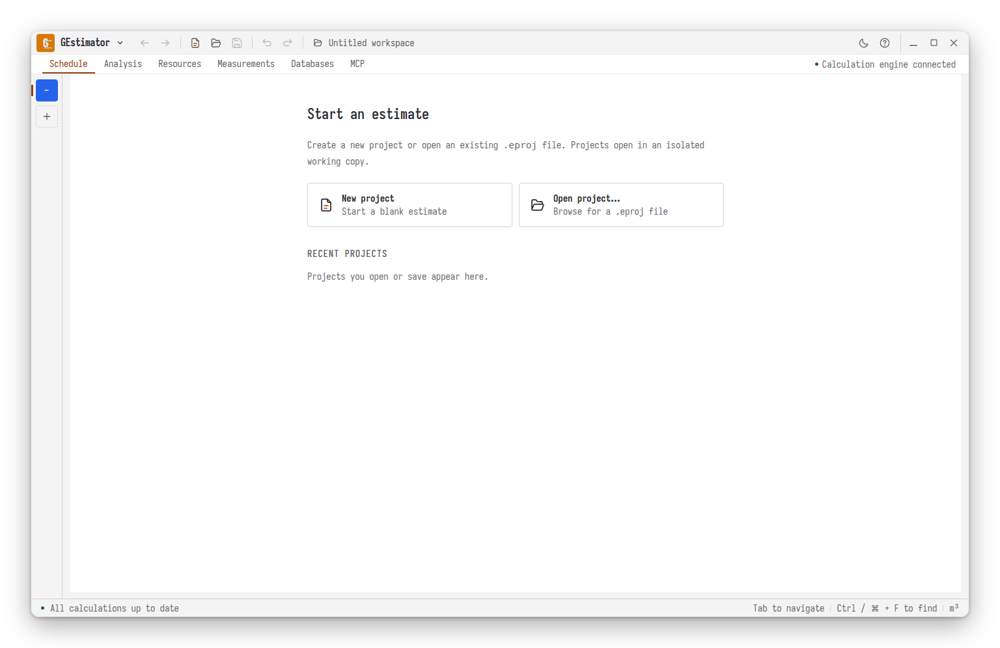
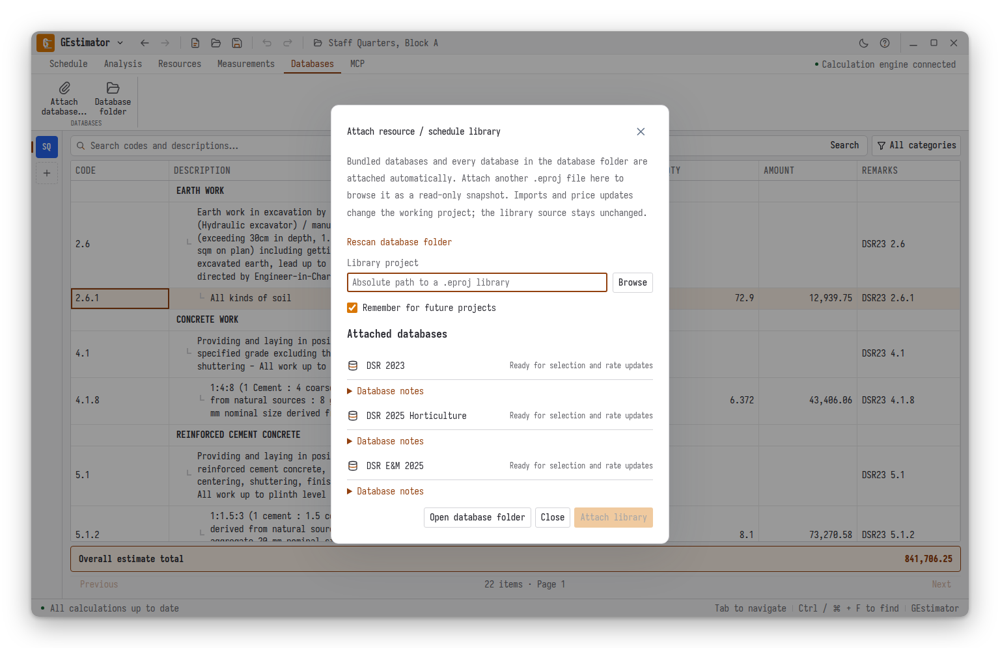
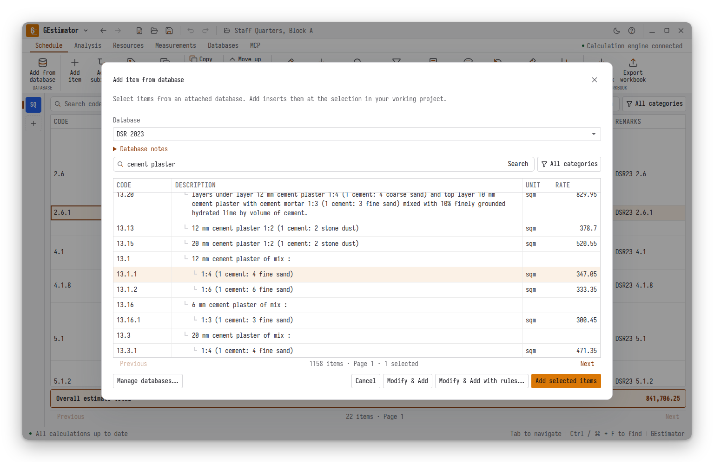
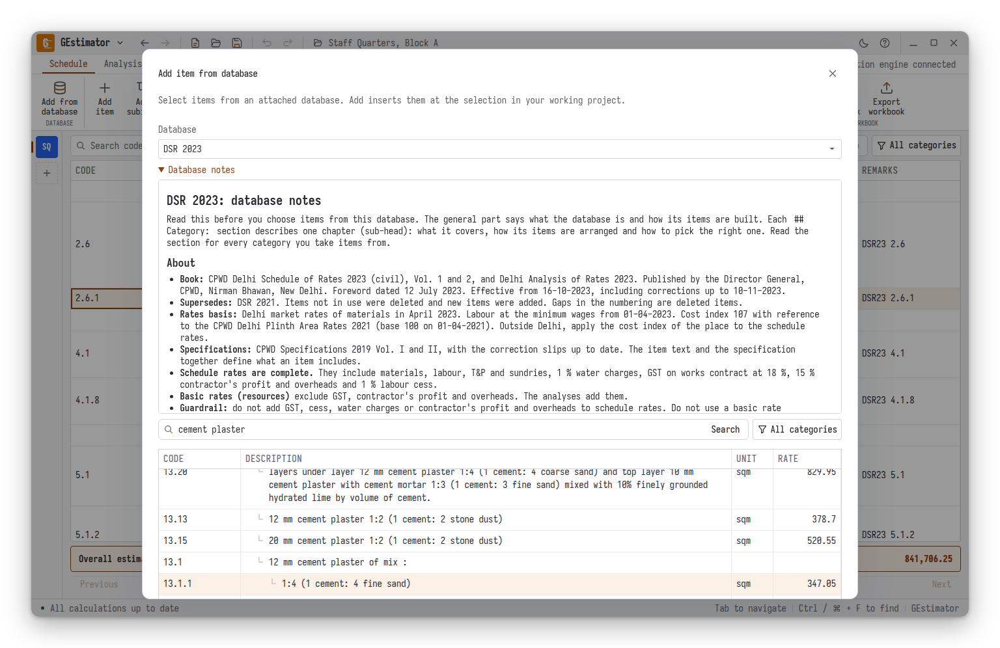
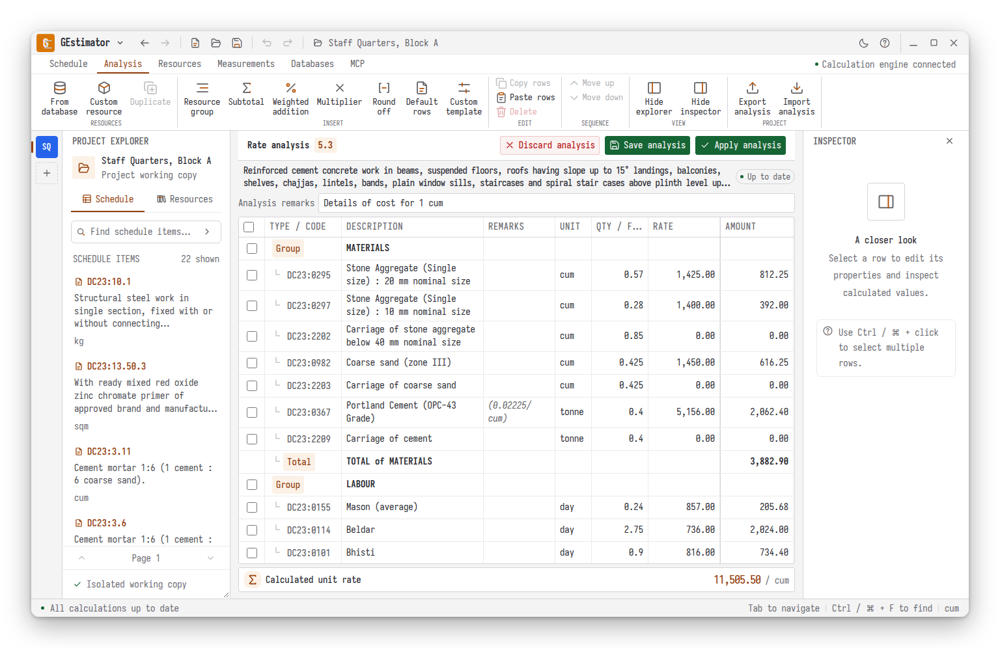
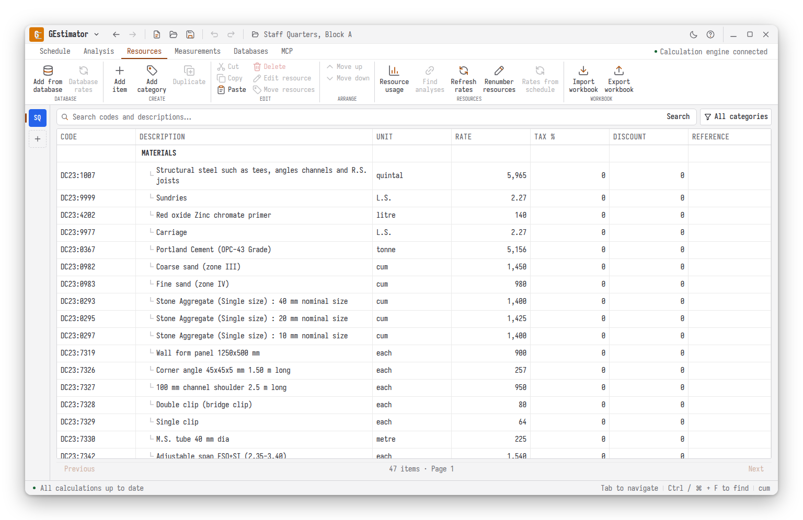
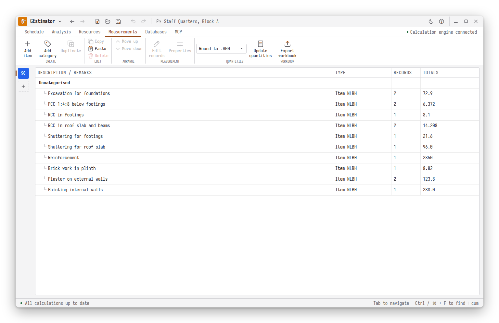
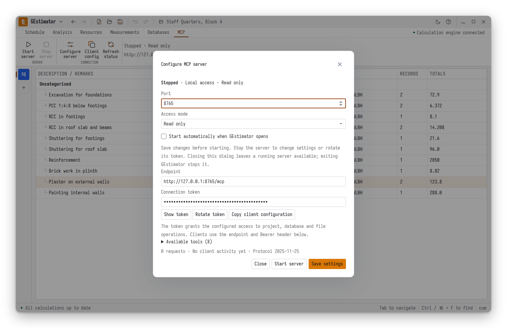

GEstimator user manual
GEstimator prepares cost and quantity estimates of civil and electrical works with detailed rate analysis. This manual walks through the workflow with a sample estimate: a small staff quarters building priced from the bundled DSR 2023 (Civil) database.
- 1. The workspace
- 2. Start or open a project
- 3. Attach a database
- 4. Build the schedule
- 5. Check and edit rate analyses
- 6. Manage resources and rates
- 7. Record measurements
- 8. Import from and export to Excel
- 9. Save, tabs and recovery
- 10. Settings
- 11. Use an AI assistant (MCP)
- 12. Keyboard shortcuts
1. The workspace

- Title bar: application menu, back and forward, new, open and save, undo and redo, the project name, theme and keyboard shortcuts.
- View tabs: Schedule, Analysis, Resources, Measurements, Databases and MCP. The ribbon below the tabs shows the tools of the current view.
- Project rail (left edge): one tile for each open project. Click a tile to switch projects;
+opens a new tab. - Type-ahead: type while a table has focus (Schedule, Resources, database picker) to jump to the first row containing every word you type. Rows are not filtered; Up/Down move between matches and Esc closes the find box. From the search field, Up/Down move through the listed rows.
- Table: the rows of the current view. A search field and category filter sit above it; the estimate total and page controls sit below it.
- Status bar: calculation status, unsaved drafts and hints.
Tables work like a spreadsheet. Click a cell to select it, double-click (or press Enter or F2) to edit, Tab to accept and move to the next cell, Escape to cancel. Ctrl+click and Shift+click select several rows. Right-click a row for its context menu.
A dark theme is available from the moon icon in the title bar.

2. Start or open a project

With no project open, the Schedule view shows the start page:
- New project starts a blank estimate.
- Open project… opens an existing
.eprojfile. Recent projects are listed below for one-click opening.
GEstimator edits an isolated working copy of the project. The file on disk changes only when you save (see section 9).
Give the estimate a name and code prefixes in Project settings (application menu). Project settings also hold free-form project notes.
3. Attach a database
A database is any .eproj file whose items and resources you copy into your estimate. GEstimator comes with:
- DSR 2023 – CPWD Delhi Schedule of Rates 2023 (Civil) with Delhi Analysis of Rates 2023.
- DSR (E&M) 2025 – CPWD Delhi Schedule of Rates (E&M) 2025 with its analyses.
- DSR 2025 Horticulture – CPWD Horticulture and Landscaping 2025.
Databases are opened read-only: nothing you do in an estimate changes them. Older schedules (DSR 2016–2021, DSR (E&M) 2016–2022 and others) can be downloaded from Other databases.
The bundled databases and every .eproj file in your database folder are attached automatically each time a project opens. Use Attach database… only for other databases:
- Open the Databases tab and click Attach database….
- Enter or browse to a
.eprojfile under Library project. - Keep Remember for future projects ticked to attach it automatically next time.
- Click Attach library.

Database folder opens the folder for your own databases. A .eproj file placed there is attached the next time a project opens, or use Rescan database folder in the dialog.
4. Build the schedule
The Schedule holds the items of the estimate: code, description, unit, rate, quantity, amount and remarks. Items are grouped in categories; an item can have subitems, and a heading row carries the common description of its subitems.
Add items from a database
- In Schedule, select the row after which the new items go.
- Click Add from database (Ctrl+L).
- Choose the database, search for the work (for example
cement plaster) and narrow the list with All categories if needed. - Select one or more items (Ctrl+click or Shift+click) and click Add selected items.

GEstimator copies each item with its rate analysis, the resources the analysis uses and any parent headings, so every rate stays traceable. Codes of imported resources carry the database prefix (for example DC23:0367) so that the same resource from two databases stays one row.
- Modify & Add lets you change the item (code, description, rate settings) before it is added.
- Modify & Add with rules… applies bulk analysis rules while adding (see section 5).
- Database notes explains how the database is organised, what its rates include and how to pick the right item. Read them before using a database for the first time.

Enter items directly
- Add item (Ctrl+I) adds an item in the selected category; Add subitem (Ctrl+Shift+I) adds a child of the selected item.
- Add category groups items; Duplicate, Copy, Paste, Delete, Move up and Move down rearrange rows. Rows copied in one GEstimator window paste into another.
- Edit any cell in place. Type quantities directly, or let measurements fill them (see section 7).
- Renumber schedule… renumbers item codes in order; Row colour highlights rows; Rate discrepancies lists items whose stored rate differs from their analysis.
The Overall estimate total below the table always covers the whole project, whatever the search or filter shows.
5. Check and edit rate analyses
Select an item and click Edit analysis to open its rate analysis. The Project explorer on the left lists the schedule items and resources for quick reference.

An analysis is a list of rows, calculated from top to bottom:
| Row | Meaning |
|---|---|
| Group | A heading such as MATERIALS or LABOUR, followed by resource rows (code, quantity, rate, amount) and a group total. |
| Subtotal | Sums the rows above it and becomes the base for the next rows. |
| Weighted addition | Adds a fraction of the base, for example Add CP&OH @ 15% (0.15) or water charges (0.01). |
| Multiplier | Replaces the running total with the base multiplied by a factor, for example to divide a lot rate by its quantity. |
| Round off | Rounds the running total, for example to the nearest 0.05. |
- Add resources with From database (resources of an attached database) or Custom resource. Insert calculation rows with the ribbon buttons; Default rows inserts your standard additions and Custom template your saved templates.
- The Calculated unit rate at the bottom updates as you edit. The Inspector on the right shows the properties and calculated values of the selected row.
- Apply analysis accepts the draft into the project, updates the item rate and every rate that depends on it, and returns to Schedule. Discard analysis abandons the changes.
- Export analysis and Import analysis exchange single analyses with Excel workbooks.
Bulk edit analyses
Bulk edit analysis (Schedule ribbon) changes many analyses at once with rules: for example set the CP&OH row to 10 % in every selected item, replace a resource, or delete water charges. Conditions select rows by kind, description, code or value. Preview shows every change before you apply it, and the whole edit is one undo step. Rule sets can be saved as presets.
6. Manage resources and rates

Resources are the materials, labour and plant on which analyses are built. Each resource has a code, description, unit, rate, tax %, discount and reference. Changing a resource rate updates every analysis and item that uses it.
- Add from database copies resources from an attached database.
- Database rates refreshes the rates of the selected resources from a database (for example a newer schedule), with a preview before applying.
- Resource usage shows which items use a resource and how much of it the estimate consumes; Find analyses jumps to them.
- Refresh rates recalculates every item rate from its analysis.
- Move resources, Cut and Paste reorganise resources between categories; Renumber resources renumbers codes.
7. Record measurements
Measurements record the detailed dimensions behind each quantity.

- In Measurements, click Add item and choose a template. NLBH (numbers, length, area, volume) suits most civil items. Other templates cover several linked quantities, steel reinforcement, electrical points and round or rectangular ducting.
- Double-click the measurement (or click Edit records) to open its records.
- Link the measurement to a schedule item under Measured quantity: type or search the item code.
- Add records with Add record (Ctrl+I) or Add multiple records, and fill in the dimensions. Cells accept arithmetic such as
2*3.5+1.2. A negative number deducts, for example a door opening. - Click Apply records.

When the measurements are complete, click Update quantities in the Measurements ribbon to copy the measured totals into the schedule quantities, with the rounding chosen next to it. Measured quantities in the Schedule ribbon does the same for the selected items.
Import records brings dimensions in from a spreadsheet range, and Properties changes the template constants and links of a measurement.
8. Import from and export to Excel
- Import workbook (Schedule or Resources ribbon) imports items or resources from a
.xlsxsheet. Choose the sheet and header row, map columns to fields and check the preview, which lists every row that cannot be used. - Import analyses imports rate analyses laid out in a workbook.
- Export workbook writes the whole estimate to a
.xlsxworkbook: schedule of rates, schedule of resources, details of measurements, resource usage and the analysis of rates of every item.
9. Save, tabs and recovery
- Save (Ctrl+S) writes the working copy back to the project file and keeps a backup of the previous version. Save project copy (Ctrl+Shift+S) writes a new file.
- Every change is one step of Undo (Ctrl+Z) and Redo (Ctrl+Y).
- Several projects can be open at once, one per tab in the project rail. Each tab keeps its own project, undo history and view: switching back returns you to the same view, search and selection.
- GEstimator saves a recovery copy of unsaved work. After a crash, the start page offers to recover it.
- You are asked to save or discard unsaved changes before a project closes.
10. Settings
- Program settings (application menu): number format and currency symbol, live search and the MCP server (General); theme, fonts and table typography (Appearance); the rows inserted by Default rows (Default analysis template); and the settings used by Modify & Add (Library Modify & Add).
- Project settings: project name, code prefixes for items and resources, and project notes.
11. Use an AI assistant (MCP)
GEstimator can run a local Model Context Protocol server so that an AI assistant (Claude, or any MCP client) reads and prepares estimates in the open project, using the same operations as the application.
- Tick Enable the MCP server for AI assistants in Program settings → General. The MCP tab appears.
- Click Configure server to choose the port and the access mode: Read only or Read and write. Copy the client configuration (endpoint and connection token) into your AI client.
- Click Start server.

The assistant reads database notes before choosing items, searches databases, imports items, edits analyses and records measurements. Every change it makes appears in the open project at once and is one undo step, so you can review it like your own edits. The server listens only on your computer, and only clients with the connection token can use it.
12. Keyboard shortcuts
The full list is under Keyboard shortcuts (the ? icon in the title bar). The most used:
| Action | Keys |
|---|---|
| Open / save / save copy | Ctrl+O / Ctrl+S / Ctrl+Shift+S |
| Find in current view | Ctrl+F |
| New / close project tab, next tab | Ctrl+T / Ctrl+W, Ctrl+Tab |
| Undo / redo | Ctrl+Z / Ctrl+Y |
| Add item, record or resource / add subitem | Ctrl+I / Ctrl+Shift+I |
| Add from database | Ctrl+L |
| Copy / paste / duplicate / delete rows | Ctrl+C / Ctrl+V / Ctrl+D / Delete |
| Move row up / down | Alt+Up / Alt+Down |
| Edit cell / cancel / next cell | Enter or F2 / Escape / Tab |
On macOS use ⌘ in place of Ctrl.